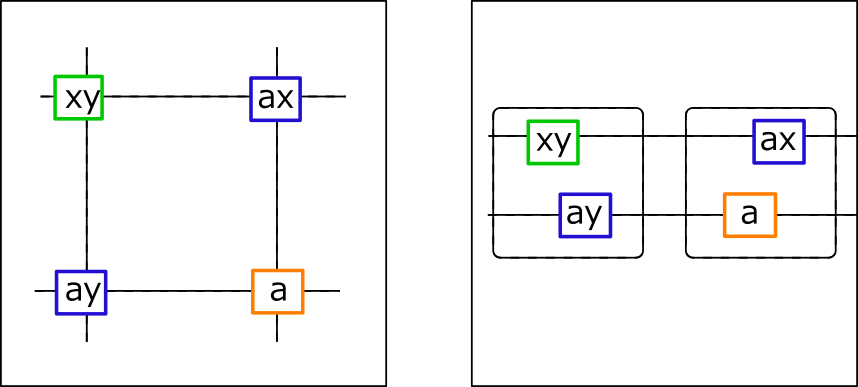
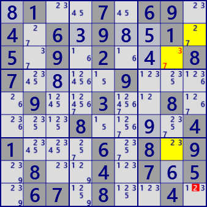
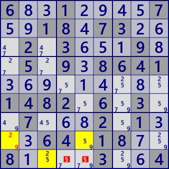
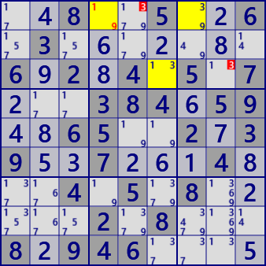

XY-Wing
XY-Wing is an analysis algorithm of Locked with a cell with two candidate digits(bivalue cell).
When the three cells of the blue frame and the green frame are bivalue and weak links link each other,
the cell in the orange frame is not the digit #a.

Here is an example of XY-Wing.



.1..7.69. 4.6.9..1. 5.9.2...8 7....9... .9..3..8. ...8....4 1...6.8.9 .8..4.7.5 .67.8..4.
6..1....7 ..18.73.. .2.3...9. .5.9.8641 ......... 1482.6.3. .7...2.1. ..64.18.. 8....3..4
..8..5..6 .3....... 6.2.4.5.7 ...384.59 ..65..2.3 9..7...4. ..4.5.8.. ...2.8... 8.946....
Top